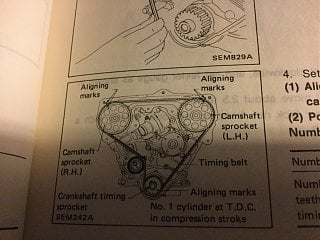

-
Hello all. I have an NA engine from an 86 MT that I am converting to turbo and putting in my 85 MT. I have an oem timing belt, tensioner pulley and spring as well as many other useful OEM parts so I figured while I have the engine out Iâll change a bunch of stuff like that. The engine is from my 86 so I know it is fine Iâve been driving it like a maniac for about a half a year. The problem is: the timing seems to be all types of jacked up. I used a haynesmanual as reference and got it to TDC on compression stroke all that good stuff which is where the first red flag arose, the previous owner had the crank pulley rotated with the TDC mark in a totally arbitrary location on the pulley, marked with a white paint marker. So I took the timing covers off and find that NEITHER of the cam gears line up with the little dots. What gets me is: the engine works fine how it is. Is it possible he put the cam gears on funky and all that all while keeping the engine on time as some sort of sick game to play with the future owner (me)? Any insight or help is greatly appreciated because I donât want to mess with the timing and blow this engine. -
Oh yeah, I took the crank pulley off and rotated it to where it is supposed to be (20 btdc) -
So all 3 dots match up when you took the harmonic balancer off? Two cams and the crankshaft timing sprocket? That is what needs to be in time.
i wonder if the harmonic balancer has shifted due to failing rubber or possible it was replaced with a different year that wasnât the same?
 -
I second what JSM said… there has to be something off about that crank pulley. The camshafts themselves have a guide pin, so you cannot install the sprockets improperly unless you flip them over and install them backwards. If your two cam marks and your crank mark line up, then you're golden. I'd look into getting a different crank pulley, personally. You'll need to change crank pulleys anyway if you plan on running a true Turbo setup… unless you want to swap pulleys on your alternator.Last edited by albionwanderer86; 07-28-2018, 07:36 AM.1985 300ZX Z31 2+2 VG33ET (running!) -
I appreciate the responses yâall sorry and I apologize about the late response. I finally got around to taking the damper off and realized what you guys meant with the actual crank sprocket, itâs Location is of much more importance than the exterior crank pulley. I ended up doing timing belt tensioner with new stud and spring all Nissan oem.

Copyright © 2006–. All rights reserved. Privacy Policy